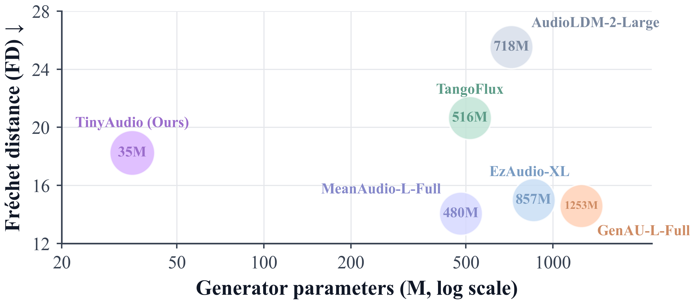
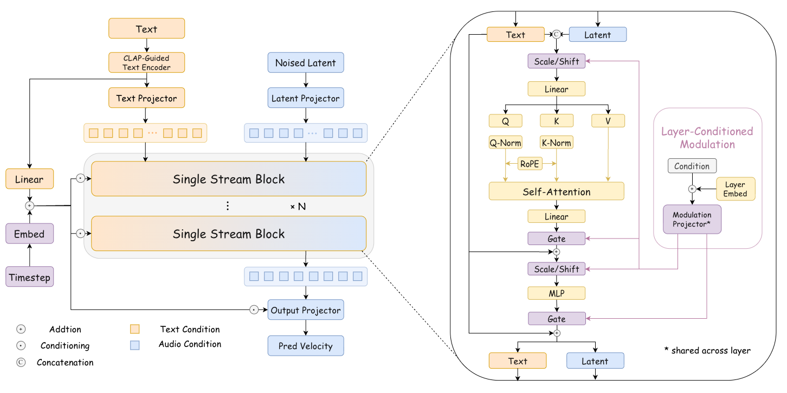

1X-LANCE Lab, Department of Computer Science and Engineering, Shanghai Jiao Tong University, China
2Shanghai Innovation Institute, China
3University of Electronic Science and Technology of China, China
Paper (soon)| Code| Audio samples| BibTeX
Text-to-audio (TTA) generation has advanced rapidly in generation quality and instruction following. However, representative systems often require around a billion parameters, limiting deployment on resource-constrained devices. This paper introduces TinyAudio, a compact flow-matching-based TTA model for low-resource deployment. To build TinyAudio, we introduce three compact components: TA-CLAP, a 32M audio-aligned text encoder; TA-DiT, a 35M single-stream flow-matching Transformer; and TA-VAE, whose 20M decoder reconstructs 44.1 kHz audio from 1024× compressed latents. TinyAudio has only 87M parameters in total, over 90% fewer than representative billion-parameter pipelines, and uses 0.48 GB peak GPU memory. On AudioCaps, TinyAudio achieves an FAD of 2.65 while retaining competitive results on TTA-Bench. We further propose TinyAudio-MF, a MeanFlow-accelerated model that enables one-step generation and achieves a real-time factor of 0.715 using four CPU cores. These results demonstrate a practical quality–footprint trade-off for low-resource TTA deployment.
| Total parameters | 87M (35M generator) |
| Peak GPU memory at inference | 0.48 GB (FP32, batch size 1) |
| AudioCaps FAD | 2.65 |
| Sampling | 25-step Euler → 1 step (TinyAudio-MF) |
| End-to-end RTF, four CPU cores | 0.715 (TinyAudio-MF) |

TinyAudio comprises three online modules. A 32M-parameter text encoder from TA-CLAP maps the input prompt to audio-aware representations, a 35M-parameter TA-DiT generates continuous audio latents, and a 20M-parameter TA-VAE decoder reconstructs 44.1 kHz waveforms. Together with lightweight projection layers, TinyAudio contains 87M parameters in total.

TinyAudio operates in the compact continuous latent space of TA-VAE. Following SemanticVAE, TA-VAE combines a DAC-style convolutional encoder with a lightweight decoder built from anti-aliased multi-periodicity (AMP) blocks. The autoencoder applies a temporal compression factor of 1024× to 44.1 kHz waveforms, producing a 64-channel latent sequence. During training, the 7M-parameter encoder produces normalized latent targets; at inference, TA-VAE retains only its approximately 20M-parameter decoder to reconstruct waveforms from generated latents.
High-performing TTA systems commonly rely on text encoders with hundreds of millions of parameters, whereas TinyAudio employs a lightweight text encoder with only 32M parameters. Under this capacity constraint, a generic language encoder may provide insufficient acoustic-semantic representations. TA-CLAP therefore adapts the lightweight text encoder to the audio domain through audio–text contrastive learning. The text encoder is initialized from Ettin-encoder-32m and paired with a pretrained HTSAT audio encoder in a dual-encoder architecture, with lightweight projection heads mapping both branches into a shared contrastive space. The branches are optimized with the pairwise sigmoid loss introduced in SigLIP. After contrastive adaptation the audio branch is discarded, and only the text branch is retained for deployment.
TA-DiT removes two sources of repeated parameters in text-conditioned generative Transformers: separate modality-fusion modules and block-specific conditional modulation networks. Projected text tokens and noised audio latents are concatenated into a single joint sequence and processed by the same self-attention parameters, so one parameter set models both intra-modal dependencies and cross-modal interactions. Audio and text tokens receive independently indexed rotary position embeddings, only audio-token outputs are projected into latent-velocity predictions, and QK-Norm is used to stabilize training. DiT-style architectures typically use a separate AdaLN modulation network in each block; TA-DiT instead shares conditional modulation networks across all blocks while keeping lightweight block-specific embeddings, which separates shared condition processing from depth-specific behavior. TA-DiT uses 18 Transformer blocks with a hidden size of 384 and 8 attention heads.
SFT provides quality-aware and balanced supervision through perceptual-quality filtering, domain balancing, and audio–text alignment ranking. From approximately 3.7M audio–text records spanning music, speech, and general sounds, samples with low perceptual quality are removed using AudioBox Aesthetics, a pretrained HTSAT classifier assigns AudioSet categories, and sampling is balanced across the three domains with category-level quotas. Within each quota, samples with higher LAION-CLAP similarity are prioritized. After duration filtering and audio-level deduplication, the pipeline yields approximately 417K pairs used to fine-tune TA-DiT.
Standard TinyAudio uses a 25-step Euler solver. TinyAudio-MF is initialized from the pretrained TinyAudio checkpoint and continues training on the quality-aware SFT subset with the standard SFT optimization settings and the Improved Mean Flows objective, reducing sampling to a single function evaluation without changing the architecture or parameter count.
The base training corpus contains approximately 3.7M audio–text pairs from AudioCaps, AudioSet, Clotho, VGGSound, WavCaps, MusicCaps, and AudioStock; AudioCaps validation and test audio are excluded from both pretraining and SFT. The base generator is trained for 500K steps followed by 200K SFT steps with a global batch size of 1024, and TA-CLAP remains frozen throughout generator training. We evaluate 10-second generations on the AudioCaps test set and report generation quality and audio–text alignment on the Accuracy subset of TTA-Bench, which contains 1,500 prompts spanning multiple sound events and parallel, sequential, and more complex temporal relations.
Footprint and inference efficiency
| Model | Gen. | Deploy. | Mem. | NFE | RTF |
|---|---|---|---|---|---|
| AudioLDM-L-Full | 739M | 953M | 3.89 GB | 200×2 | 1.190 |
| AudioLDM2-Large | 718M | 1467M | 5.93 GB | 200×2 | 4.173 |
| Tango-Full | 866M | 1295M | 5.28 GB | 200×2 | 1.880 |
| Tango-2-Full | 866M | 1295M | 5.28 GB | 200×2 | 1.879 |
| MeanAudio-L-Full | 480M | 1032M | 4.79 GB | 25 | 0.057 |
| EzAudio-XL | 857M | 2120M | 8.61 GB | 200×2 | 1.896 |
| GenAU-L-Full | 1253M | 2031M | 18.54 GB | 200×2 | 0.937 |
| TangoFlux | 516M | 937M | 6.99 GB | 50×2 | 0.257 |
| Resonate | 470M | 1108M | 5.13 GB | 25×2 | 0.273 |
| TinyAudio | 35M | 87M | 0.48 GB | 25×2 | 0.078 |
| TinyAudio-MF | 35M | 87M | 0.48 GB | 1 | 0.010 |
Gen. and Deploy. denote generator and total inference-time parameter counts. Mem. is peak GPU memory during inference; Mem. and RTF are measured on a single GPU in FP32 with batch size 1. NFE counts function evaluations, where ×2 indicates classifier-free guidance.
AudioCaps generation quality
| Model | FAD ↓ | FD ↓ | KL ↓ | IS ↑ |
|---|---|---|---|---|
| AudioLDM-L-Full | 4.32 | 29.50 | 1.68 | 8.17 |
| AudioLDM2-Large | 3.45 | 25.53 | 1.65 | 7.98 |
| Tango-Full | 2.68 | 15.64 | 1.24 | 8.78 |
| Tango-2-Full | 2.87 | 15.93 | 1.20 | 10.05 |
| MeanAudio-L-Full | 2.59 | 14.06 | 1.21 | 12.46 |
| EzAudio-XL | 3.64 | 14.98 | 1.29 | 11.38 |
| GenAU-L-Full | 2.07 | 14.58 | 1.36 | 10.43 |
| TangoFlux | 2.41 | 20.65 | 1.27 | 12.81 |
| Resonate | 2.27 | 15.53 | 1.31 | 10.79 |
| TinyAudio | 2.65 | 18.24 | 1.32 | 10.44 |
| TinyAudio-MF | 2.83 | 23.65 | 1.49 | 8.47 |
FAD uses VGGish features; FD, KL, and IS use PANNs features.
TTA-Bench, Accuracy subset
| Model | CE ↑ | CU ↑ | PC ↑ | PQ ↑ | CLAP ↑ |
|---|---|---|---|---|---|
| AudioLDM-L-Full | 3.275 | 5.137 | 3.219 | 5.854 | 0.441 |
| AudioLDM2-Large | 3.441 | 5.440 | 2.957 | 5.984 | 0.415 |
| Tango-Full | 3.264 | 5.151 | 3.360 | 5.954 | 0.440 |
| Tango-2-Full | 3.468 | 5.196 | 3.800 | 5.895 | 0.467 |
| MeanAudio-L-Full | 3.304 | 5.151 | 2.995 | 5.743 | 0.469 |
| EzAudio-XL | 3.388 | 5.055 | 3.663 | 5.719 | 0.446 |
| GenAU-L-Full | 3.359 | 5.096 | 3.584 | 5.802 | 0.468 |
| TangoFlux | 3.539 | 5.074 | 3.673 | 5.782 | 0.472 |
| Resonate | 3.451 | 5.328 | 3.232 | 6.064 | 0.476 |
| TinyAudio | 3.343 | 5.262 | 2.983 | 5.996 | 0.429 |
| TinyAudio-MF | 3.350 | 5.257 | 3.043 | 5.994 | 0.403 |
AudioBox-Aesthetics dimensions and Resonate-style CLAP similarity. Baseline values follow the Resonate evaluation.
Subjective evaluation
| Model | OVL ↑ | REL ↑ |
|---|---|---|
| TinyAudio | 3.560 ± 0.985 | 3.520 ± 0.940 |
| TangoFlux | 3.505 ± 0.989 | 3.600 ± 0.992 |
| EzAudio | 3.155 ± 1.169 | 3.190 ± 1.169 |
| AudioLDM | 3.015 ± 1.004 | 2.730 ± 0.962 |
Ten audio experts assess ten generated waveforms from each model on a five-point scale, rating Overall Quality (OVL) and Relevance (REL). Presentation order is randomized and model identities are hidden from raters.
Component ablations train every variant for 200K steps on the combined AudioSet and AudioCaps corpus and evaluate on 957 AudioCaps test samples. Per-block AdaLN replaces the shared modulation networks with block-specific ones, and Dual-stream replaces the single-stream design with an MMDiT architecture; both variants use fewer Transformer blocks to match the parameter count of Base. The data-selection ablations compare pretraining only, Random SFT, and SFT with equally sized 417K-pair subsets.
| Setting | FAD ↓ | KL ↓ | IS ↑ |
|---|---|---|---|
| Base | 2.494 | 1.399 | 10.695 |
| Per-block AdaLN | 2.658 | 1.370 | 10.455 |
| Dual-stream | 3.168 | 1.349 | 10.093 |
| w/o TA-CLAP adaptation | 4.051 | 1.593 | 8.466 |
| Pretraining only | 2.471 | 1.362 | 10.231 |
| Random SFT | 3.412 | 1.401 | 9.891 |
| SFT | 2.651 | 1.322 | 10.442 |
Comparison samples will be added here. Each block below expands into a prompt and the corresponding waveforms.
@inproceedings{liu2027tinyaudio,
title = {TinyAudio: Compact and Efficient Text-to-Audio
Generation for Low-Resource Deployment},
author = {Liu, Junxi and Li, Xiquan and Guan, Wenhao and
Duan, Yifan and Niu, Zhikang and Ma, Ziyang and
Chen, Xie},
booktitle = {IEEE International Conference on Acoustics,
Speech and Signal Processing (ICASSP)},
year = {2027}
}